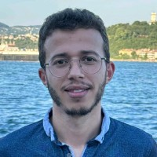

About Me

Omar Ikne
Hello! I am Omar Ikne, a PhD student specializing in Deep Learning and Computer Vision. My research focuses on advancing machine learning techniques to solve real-world problems. Welcome to my academic web page where you can find more about my research, publications, and professional journey.
Updates & News
- Upcoming Conference: The 18th IEEE International Conference on Automatic Face and Gesture Recognition 27-31 May 2024 SDKM, ITU Campus, Istanbul, Turkey.
- New Publication: "Spatio-Temporal Sparse Graph Convolution Network for Hand Gesture Recognition".
- New Publication: "Skeleton-based Self-Supervised Feature Extraction for Improved Dynamic Hand Gesture Recognition".